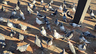
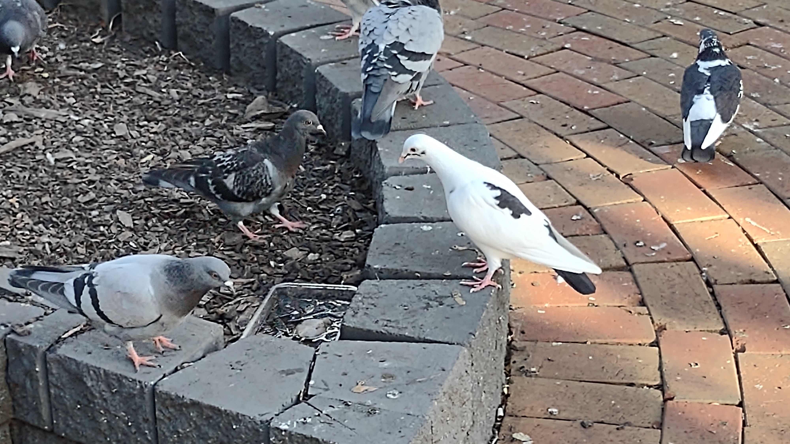
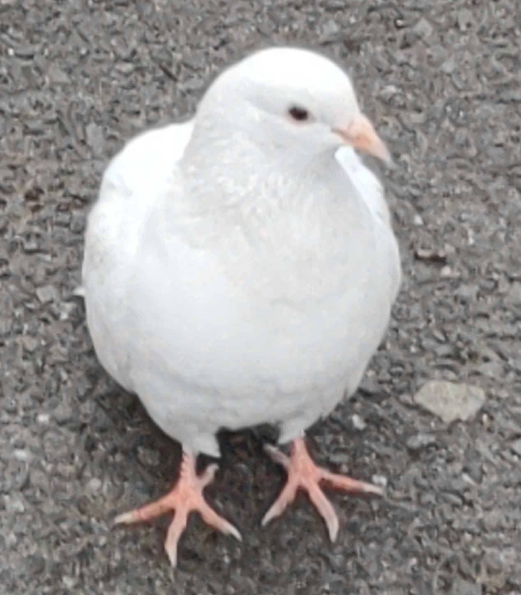
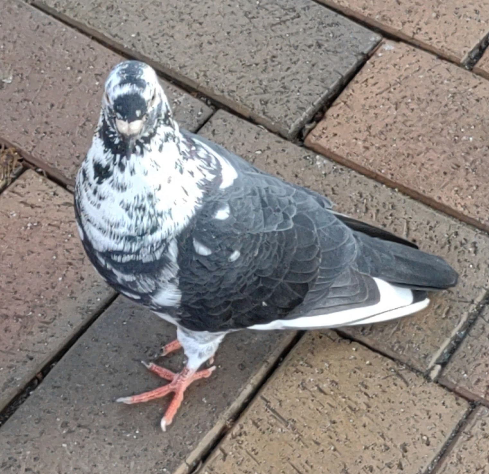

Rock Pigeons
Though Rock Pigeons are the most common type of pigeons you'll find in urban areas, that
doesn't mean they'll all look the same.
Here are some examples of beautiful Rock Pigeons!



